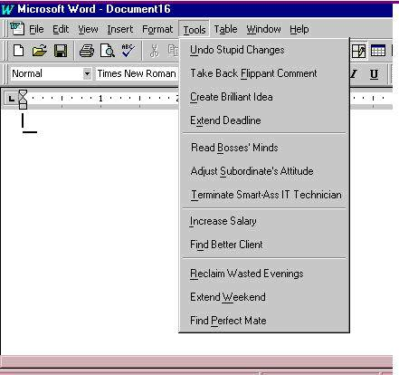
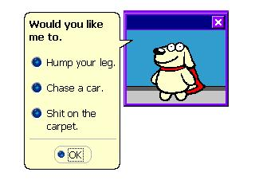
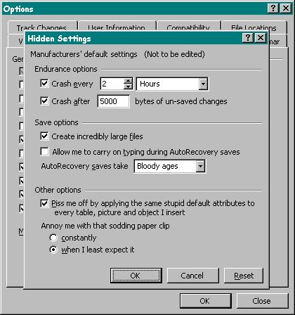
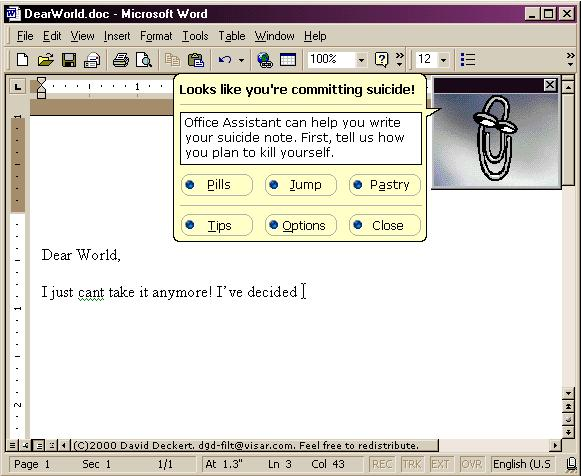

![[ Prev ]](../gx/navbar/prev.jpg)
![[ Table of Contents ]](../gx/navbar/toc.jpg)
![[ Front Page ]](../gx/navbar/frontpage.jpg)
![[ FAQ ]](./../gx/navbar/faq.jpg)

"Linux Gazette...making Linux just a little more fun!"
The Back Page
About This Month's Authors
 Marius Andreiana
Marius Andreiana
Marius is 20 years old, student in the second year at Politehnica
Bucharest, Romania
and working as a web developer. Besides Linux, he also loves music (from
rock to dance), dancing, having fun, spending time with friends.
He is interested also in science in general (and that quantum spooky
connection :)
Bryan Brunton
With a degree in philosophy and as a reformed Visual Basic programmer,
Bryan Brunton is a software engineer who wants to work with whatever
tools allow him to never again use pointers while remaining platform
agnostic.
Shane Collinge
Part computer programmer, part cartoonist, part Mars Bar. At night, he runs
around in a pair of colorful tights fighting criminals. During the day... well,
he just runs around. He eats when he's hungry and sleeps when he's sleepy.
Matteo Dell'Omodarme
I'm a student at the University of Pisa and a Linux user since 1994.
Now I'm working on the administrations of Linux boxes at the Astronomy section
of the Department of Physics, with special experience about security. My
primary email address is
matt@martine2.difi.unipi.it.
Chris Gibbs
I'm a mad, sad geek with three dogs, a network and a cat living
on top of a mountain in a Welsh valley. So I'm a contradiction! All
that is good is either caffine, chocolate or Linux, so send me lots of
chocolate or just point me at more great stuff to run on a salvaged 486!
chocolate@hawklord.uklinux.net
Mark Nielsen
Mark works at ZING
(www.genericbooks.com) and
GNUJobs.com. Previously,
Mark founded The Computer Underground.
Mark works on non-profit and volunteer projects which promote free literature
and software. To make a living, he recruits people for GNU related jobs and
also provides solutions for web/database problems using Linux, FreeBSD, Apache,
Zope, Perl, Python, and PostgreSQL.
Ben Okopnik
A cyberjack-of-all-trades, Ben wanders the world in his 38' sailboat, building
networks and hacking on hardware and software whenever he runs out of cruising
money. He's been playing and working with computers since the Elder Days
(anybody remember the Elf II?), and isn't about to stop any time soon.
Kapil Sharma
Kapil is a Linux and Internet security consultant. He has been
working on various Linux/Unix systems and Internet Security for more than
2 years. He maintains a web site
(http://linux4biz.net) for providing
free as well as commercial support for web, Linux and Unix solutions.
Irving Washington
Irving Washington (pseud.), as witnessed by his personal server
www.fifthgate.org, is mostly
interested in creating useful web services.
Not Linux
Here are some screenshots of lesser-known features of Microsoft Office.
David Deckert made the last one. Neither of
us know where the other three came from.




We have changed the Linux Gazette logo at the top of the page to an 8K
PNG image for your fast-downloading pleasure. Thanks to
Karl-Heinz Herrmann for the
suggestion and the image. Here is also a small version (200 pixels wide)
for those who want an icon on their site to link to LG site with.
Happy Linuxing!
Michael Orr
Editor, Linux Gazette, gazette@linuxgazette.net
Copyright © 2001, the Editors of Linux Gazette.
Copying license http://www.linuxgazette.net/copying.html
Published in Issue 63 of Linux Gazette, Mid-February (EXTRA) 2001